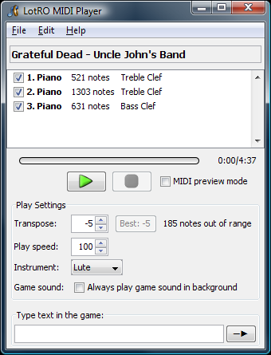

How to download
Step 1: Install Java
Verify your Java installationLotRO MIDI Player uses Java Web Start. You must have Java 6.0 or greater installed.
Step 2: Download using Java Web Start
Download and Install LotRO MIDI PlayerClicking the link to download, install, and run LotRO MIDI Player. The program is signed by me (Digero). It will put an icon on your desktop so you don't have to come back to this web site each time you want to use the program.
Note: if you'd like a better-looking icon for your desktop shortcut, you can download lotromusic.ico and set it as the shortcut's icon.
Step 3: Configure LotRO
You must have a keyboard key mapped to each of the notes in the game. It tends to work best if none of the keys are mapped with Shift, Ctrl, or Alt modifiers. LotRO MIDI player will automatically determine your key mappings; however, if you change your keyboard mapping while the program is running, you must select "Reload Key Mappings" from the Edit menu.How to Use
You can start the program either by clicking the link above or double-clicking the shortcut on your desktop.You MUST be in music mode when you press play or bad things will happen! Do not try to type using the in-game chat box while playing music.
Opening songs
The easiest way to open a MIDI file is to DRAG and DROP the file onto the LotRO MIDI Player window. You can also open a MIDI file from the file menu. Track List
Uncheck tracks that you don't want to be played. The note count lists how many notes that particular instrument plays for the entire piece.Local preview mode
When this is enabled, the song will be played using the computer's MIDI synthesizer rather than in-game. Use this to help figure out which tracks should be turned on and off for complicated songs. Note: If you can't hear any music when Local Preview Mode is enabled, try turning up the "MIDI Synth" volume in the system volume control panel. Windows Media Player seems to set the MIDI Synth volume to 0 if you pause a MIDI file.Transpose
Set the number of half-steps to transpose the notes in the song. This will help move the song to fit within the LotRO instruments' 3 octaves of range. Any notes that still fall outside of the instrument's range will be automatically transposed up or down by a full octave so that they can still be played.Type text in the game
Since LotRO MIDI Player works by simulating key presses in the game, you cannot type in the chat bar in the game. To work around this, you can type using this text box. It will safely type the message into the game for you when you press Enter or click Send.Tips
- Try to find MIDI files that were arranged for the piano or guitar. These sound the best when played on the lute.
- If the game gives you a "Too many requests" error, try slowing the tempo or unchecking some of the tracks.
- Stringed instruments (Lute, Harp, Theorbo) sound the best. Wind instruments (Flute, Clarinet, Horn, Bagpipe) sound decent, but I still need to do some more work to fully support them. Drums and Cowbell are NOT supported.
Created by Digero of Landroval

© 2008 acasylum.com
The Lord of the Rings Online™: Shadows of Angmar™ is a trademark of Turbine, Inc.
This site is not affiliated with nor endorsed by Turbine, Inc.
Visit the Lord of the Rings Online™ home page.
The Lord of the Rings Online™: Shadows of Angmar™ is a trademark of Turbine, Inc.
This site is not affiliated with nor endorsed by Turbine, Inc.
Visit the Lord of the Rings Online™ home page.